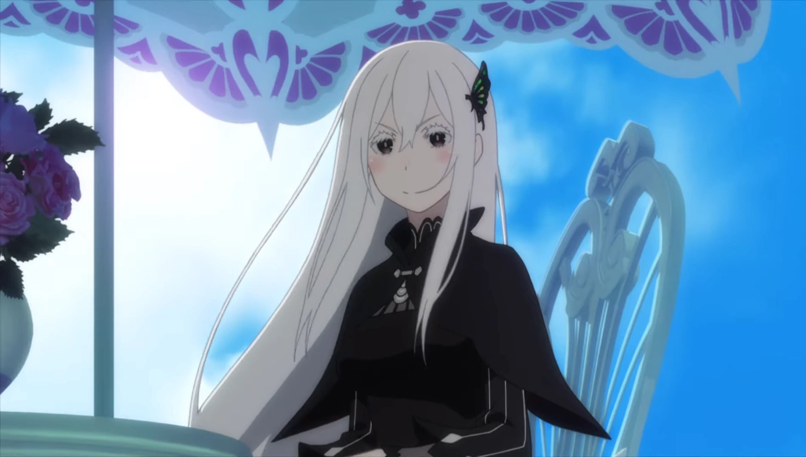

Echidna tem uma personalidade guiada por sua infinita sede de conhecimento e completa falta de empatia tradicional. Ela é sociopata, egoísta e pragmática, disposta a manipular, mentir e sacrificar qualquer um para satisfazer sua curiosidade insaciável sobre o mundo e suas possibilidades.
Ela é movida por uma curiosidade insaciável e inteligência vasta. Entre suas principais peculiaridades, destaca-se seu famoso "chá", conhecido por ser feito a partir de seus próprios fluidos corporais. Além disso, seu aniversário é celebrado em 24 de janeiro, uma data que funciona como um trocadilho com a palavra japonesa para "antiguidade
Fator de Bruxa único: Echidna é a única Bruxa dos Pecados que nasceu com o seu Fator Bruxo.
Intenções ocultas: Apesar de parecer doce e disposta a ajudar, suas emoções são puramente calculadas. Ela não entende ou sente empatia humana e vê o poder de retorno do Subaru apenas como uma ferramenta para acumular conhecimento.
A criadora de Puck: Echidna é a grande criadora do espírito artificial Puck, com regras específicas projetadas para monitorar a evolução e o bem-estar de Emilia.
Origem do Nome: Como a maioria das bruxas da obra, seu nome é uma referência mitológica. Na mitologia grega, Echidna era um monstro metade mulher e metade serpente.
Nascida muito antes dos eventos principais da série, Echidna foi uma das sete lendárias Bruxas do Pecado. Movida pelo desejo de entender e catalogar tudo o que existe, ela desenvolveu um intelecto genial e uma visão pragmática sobre o mundo. No passado, ela via o mundo como algo frágil que precisava de proteção e acreditava que guiá-lo seria seu dever, embora tenha falhado em suas tentativas e passado a focar estritamente na busca por conhecimento absoluto.
Domínio absoluto dos seis elementos mágicos, uso da Autoridade da Avareza, criação de artefacts e espíritos (como Puck), além de manipulação de sonhos e teletransporte